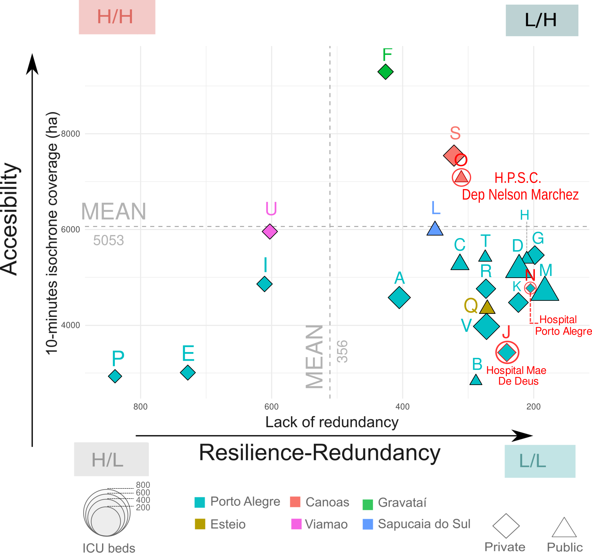

7 Calculate redundancy
7.1 Research Question 3
Which healthcare facility was the least resilient in terms of redundancy?
Figure 7.1 includes the healthcare facilities of the Core Metropolitan Area their bed capacity, their accessibility and lack of resilience in terms of redundancy. The size of each point is related to the number of beds, while the shape represent if it is a public or private entity. We measured the accesibility on the y-axis by the surface covered in 10 minutes by car from each healthcare facilities The x-axis represents the lack of redundancy based on the difference on alternatives routes to the healthcare facilities coloured in red intersected with the flood extent.
High lack of redundancy highlights cases like Hospital Restinga e Extremo Sul, where the alternative paths vary greatly in distance. This suggests poor resilience, where disruptions from the flood result in inefficient and costly. On the contrary, low lack of redundancy values indicates similar distances in the alternative routes to the hospital showing a higher resilience. The most resilient hospitals in terms of lack of redundancy are those located in the quadrant “L/H” with a low lack of redundancy and high accesibility in terms of coverage.
The data is contained in the Table 7.1
7.1.1 Alternative route function
Show the code
alternative_routes <- function(df_isochrone_points){
for (idx in 1:length(df_isochrone_points$id)) {
tic(glue("run {idx}/{length(df_isochrone_points$id)}"))
hospital_name <- df_isochrone_points$cd_cnes[idx]
origin_id <- df_isochrone_points$id[idx]
table_name_1 <- glue("first_path_point_{as.character(idx)}")
table_name_2 <- glue("second_path_point_{as.character(idx)}")
table_name_3 <- glue("second_route_point_{as.character(idx)}")
table_name_4 <- glue("third_path_point_{as.character(idx)}")
table_name_5 <- glue("third_route_point_{as.character(idx)}")
table_name_6 <- glue("three_alternative_routes_point_{as.character(idx)}")
table_name_7 <- glue("table_end_point_{as.character(idx)}")
#### First shortest path
dbExecute(glue_sql("DROP TABLE IF EXISTS {`table_name_1`}", .con=connection),
conn=connection)
query_1 <- glue_sql("
CREATE TABLE {`table_name_1`} AS
SELECT
seq,
path.start_vid,
path.end_vid,
path.node,
path.edge,
net.the_geom,
path.cost,
path.agg_cost,
1 AS path
FROM pgr_dijkstra('
SELECT
id,
source,
target,
cost
FROM ghs_aoi_net_largest_renamed',
ARRAY(SELECT id FROM regular_sampling_isochrones_snapped_ghs_aoi WHERE id ={origin_id}),
ARRAY(SELECT id AS end_id FROM municipalities_ghs_hospitals WHERE cd_cnes = {hospital_name}),
directed:=TRUE) AS path
LEFT JOIN ghs_aoi_net_largest_renamed AS net
ON path.edge = net.id", .con = connection)
# Send the query
result_q1 <- dbGetQuery(conn= connection, query_1)
#### Second network for second shortest path
dbExecute(glue_sql("DROP TABLE IF EXISTS {`table_name_2`}", .con=connection),
conn=connection)
query_2 <- glue_sql("CREATE TABLE {`table_name_2`} AS
SELECT net.id,
net.source,
net.target,
route.edge,
route.cost AS cost,
net.the_geom,
CASE
WHEN route.node = net.source
OR route.node = net.target THEN net.cost * 20
ELSE net.cost
END AS cost_updated_st
FROM
ghs_aoi_net_largest_renamed AS net
LEFT JOIN
{`table_name_1`} AS route
ON
route.edge= net.id", .con = connection);
result_q2 <- dbGetQuery(conn= connection, query_2)
#### Second shortest path
dbExecute(glue_sql("DROP TABLE IF EXISTS {`table_name_3`}", .con=connection),
conn=connection)
query_3 <- glue_sql("
CREATE TABLE {`table_name_3`} AS
SELECT
seq,
shortest.node,
shortest.edge,
net.the_geom,
net.cost_updated_st,
shortest.start_vid,
shortest.end_vid,
2 AS path
FROM
pgr_dijkstra('
SELECT
id,
source,
target,
cost_updated_st AS cost
FROM
{`table_name_2`}',
ARRAY(SELECT id FROM regular_sampling_isochrones_snapped_ghs_aoi WHERE id = {origin_id}),
ARRAY(SELECT id FROM municipalities_ghs_hospitals WHERE cd_cnes = {hospital_name}),
directed:=TRUE
) AS shortest
LEFT JOIN
{`table_name_2`} AS net
ON shortest.edge = net.id;
", .con = connection)
dbExecute(conn = connection, query_3)
#### Third network for third shortest path
dbExecute(glue_sql("DROP TABLE IF EXISTS {`table_name_4`}", .con=connection),
conn=connection)
query_4 <- glue_sql("
CREATE TABLE {`table_name_4`} AS
SELECT net.id,
net.source,
net.target,
route.edge,
route.cost_updated_st,
net.cost,
net.the_geom,
CASE
WHEN route.node = net.source
OR route.node = net.target THEN net.cost_updated_st * 20
ELSE net.cost_updated_st
END AS cost_updated_nd
FROM
{`table_name_2`} AS net
LEFT JOIN
{`table_name_3`} AS route
ON
route.edge= net.id", .con=connection);
dbExecute(conn = connection, query_4)
#### Third shortest path
dbExecute(glue_sql("DROP TABLE IF EXISTS {`table_name_5`}", .con=connection),
conn=connection)
query_5 <- glue_sql ("CREATE TABLE {`table_name_5`} AS
SELECT
seq,
shortest.node,
shortest.edge,
net.the_geom,
net.cost_updated_st,
shortest.start_vid,
shortest.end_vid,
3 AS path
FROM
pgr_dijkstra('
SELECT id,
source,
target,
cost_updated_nd AS cost
FROM {`table_name_4`}',
ARRAY(SELECT id FROM regular_sampling_isochrones_snapped_ghs_aoi WHERE id = {origin_id}),
ARRAY(SELECT id FROM municipalities_ghs_hospitals WHERE cd_cnes = {hospital_name}),
directed:= true) AS shortest
LEFT JOIN
{`table_name_4`} AS net ON net.id = shortest.edge", .con=connection);
dbExecute(conn = connection, query_5)
dbExecute(glue_sql("DROP TABLE IF EXISTS {`table_name_6`}", .con=connection),
conn=connection)
alterantive_point_1 <- glue_sql("
CREATE TABLE {`table_name_6`} AS
SELECT start_vid, end_vid,path, the_geom, edge FROM {`table_name_1`}
UNION
SELECT start_vid, end_vid,path, the_geom, edge FROM {`table_name_3`}
UNION
SELECT start_vid, end_vid,path, the_geom, edge FROM {`table_name_5`}", .con = connection)
result_6 <- dbGetQuery(conn = connection, alterantive_point_1)
dbExecute(glue_sql("DROP TABLE IF EXISTS {`table_name_7`}", .con=connection),
conn=connection)
table_end_point_1 <- glue_sql("
CREATE TABLE {`table_name_7`} AS
SELECT
alternative.*,
ceil(st_length(alternative.the_geom::geography)/1000) As length,
original.cost AS cost
FROM
{`table_name_6`} AS alternative
LEFT JOIN
ghs_aoi_net_largest_renamed AS original
ON
alternative.edge = original.id
WHERE
edge!= -1", .con=connection)
result_7 <- dbGetQuery(conn=connection,table_end_point_1 )
calculations <- glue_sql("
INSERT INTO table_end_v2 (start_vid, end_vid, path, length, cost, the_geom)
SELECT
start_vid,
end_vid,
path,
sum(length) AS length,
sum(cost) AS cost,
st_union(the_geom) as the_geom
FROM
{`table_name_7`}
GROUP BY
start_vid,
end_vid,
path
ORDER BY path ASC", .con=connection)
dbExecute(conn=connection, calculations)
toc()
}
}7.1.2 Applying spatial indexes
Show the code
---- creating indexes public
--- ghs_aoi_net_largest_renamed
CREATE INDEX idx_ghs_aoi_net_largest_renamed ON public.ghs_aoi_net_largest_renamed USING gist(the_geom);
CREATE INDEX idx_ghs_aoi_net_largest_renamed_source ON public.ghs_aoi_net_largest_renamed USING btree(source);
CREATE INDEX idx_ghs_aoi_net_largest_renamed_target ON public.ghs_aoi_net_largest_renamed USING btree(target);
CREATE INDEX idx_ghs_aoi_net_largest_renamed_id ON public.ghs_aoi_net_largest_renamed USING btree(id);
--- ghs_aoi_net_largest_vertices_pgr
CREATE INDEX idx_ghs_aoi_net_largest_vertices_pgr ON public.ghs_aoi_net_largest_renamed_vertices_pgr USING gist(the_geom);
CREATE INDEX idx_ghs_aoi_net_largest_vertices_id ON public.ghs_aoi_net_largest_renamed_vertices_pgr USING btree(id);
--- hospitals_poi
CREATE INDEX idx_municipalities_ghs_hospitals_id ON public.municipalities_ghs_hospitals USING btree(id);7.1.3 Create table using the function
Show the code
library(glue)
library(tictoc)
table_end_v2 <- glue_sql("CREATE TABLE table_end_v2
(start_vid integer,
end_vid integer,
path smallint,
length float,
cost float,
the_geom geometry)")
table_end_db <- dbGetQuery(conn=connection,table_end_v2 )
isochrones_sampling_points <-st_read(connection, Id(schema="agile_gis_2025_rs", table="regular_sampling_isochrones_snapped_ghs_aoi"))
df_isochrone_points <- isochrones_sampling_points
for (idx_hospital in 1:length(unique(isochrones_sampling_points$cd_cnes))){
tic(glue("hospital run {idx_hospital}/{length(unique(isochrones_sampling_points$cd_cnes))}"))
code_hospital<-unique(isochrones_sampling_points$cd_cnes)[idx_hospital]
points_for_isochrone <- filter(isochrones_sampling_points,
cd_cnes == code_hospital)
alternative_routes(
df_isochrone_points=points_for_isochrone)
toc()
}
# Time: 3095546 ms